Overview
During my WIL placement at Capaciti, our team of three built Shezz-App, a salon platform where customers book beauty appointments, send hairstyle references with price offers, and earn loyalty rewards. We worked in Scrum-inspired sprints, tracked on Trello, coordinated on WhatsApp and stored in GitHub. Each section below shows the evidence (screenshots and documents) followed by a STAR reflection (Situation, Task, Action, Result).
The brief for the week came through our team WhatsApp group: deliver a fully functional web application, with the team voting on which idea to build.
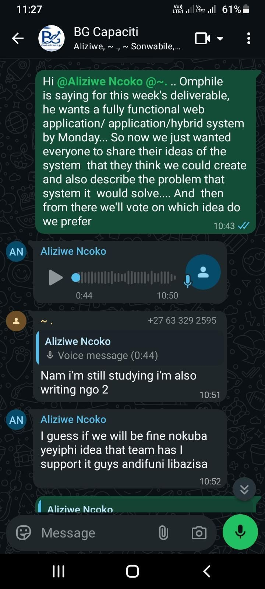
1. Agile Team Charter
Our shared purpose, roles, working agreements and boundaries.
Evidence

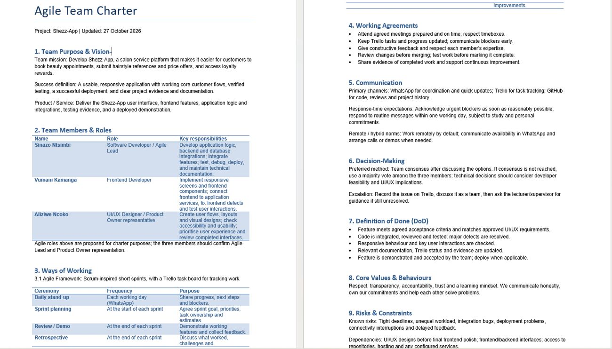

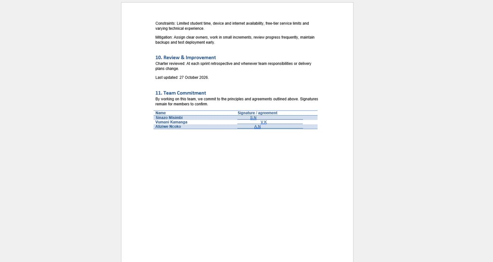

Reflection (STAR)
At Capaciti our team of three was asked to deliver a fully functional web application within days. We had to agree on an idea by vote on WhatsApp, and we had no written agreement on how we would work together while balancing our studies.
As Software Developer and Agile Lead, I needed to help the team turn our shared goal into a written Agile Team Charter that defined purpose, roles, communication, decision-making and quality standards.
I defined the mission (Shezz-App) and success criteria, matched roles to strengths, and set Scrum-inspired ceremonies: daily WhatsApp stand-ups, sprint planning, review/demo and retrospective. We chose WhatsApp, Trello and GitHub as tools, agreed on consensus first and a majority vote second, wrote a Definition of Done, and listed risks with mitigations. All three members signed.
The charter was finalised on 27 October 2026 and gave us one reference for responsibilities and standards. I learned that a charter only works if it is revisited; next time I will have it signed at the start of Sprint 1 and review it at every retrospective.
2. User Stories and Tasks
Each requirement written from the end user's view, with acceptance criteria, an owner and a checklist.
Evidence

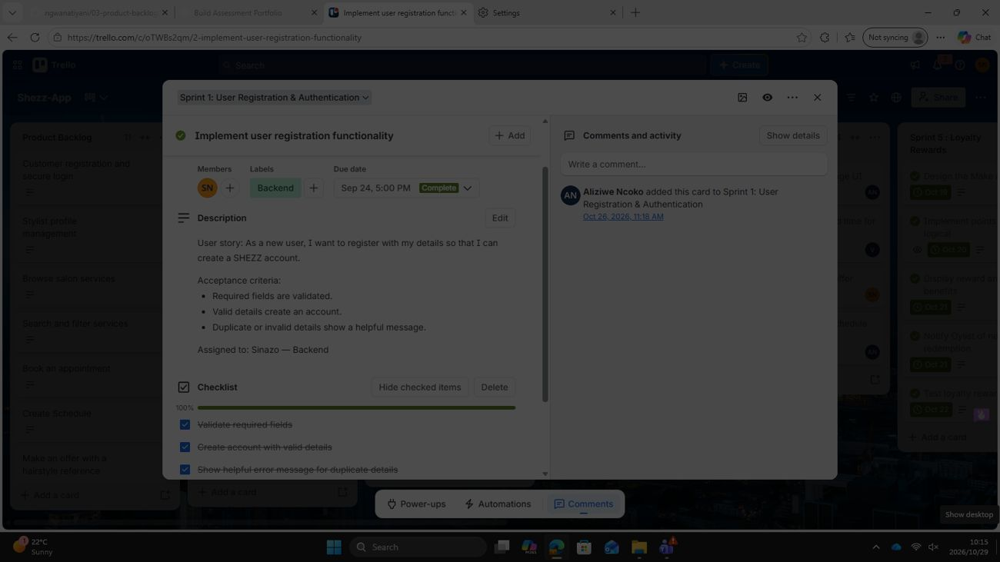

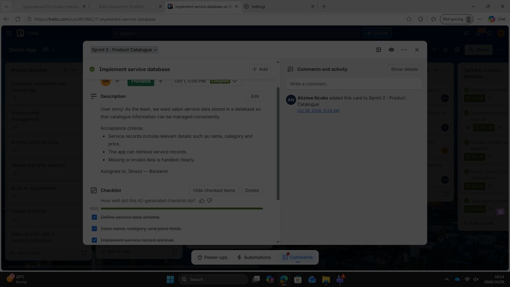

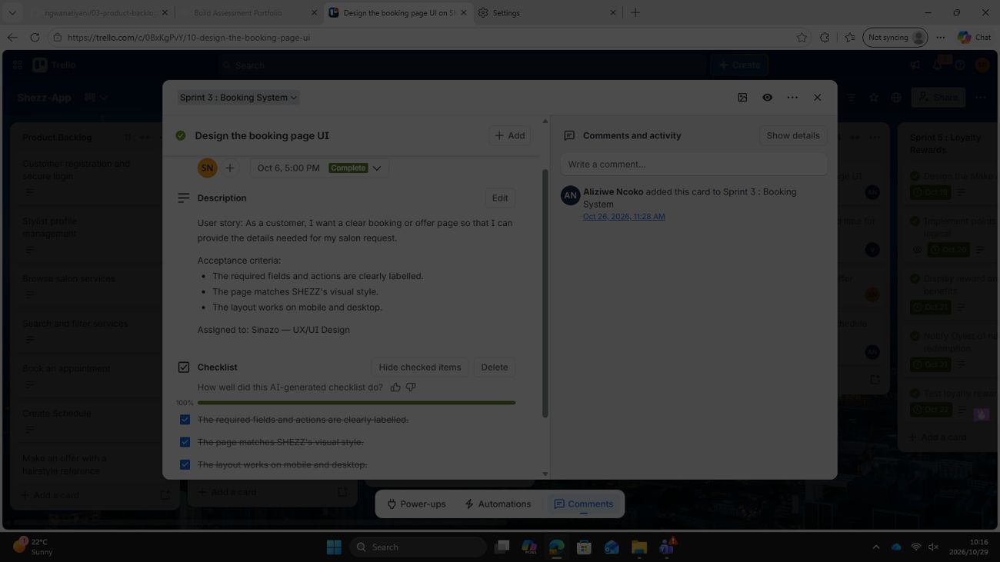

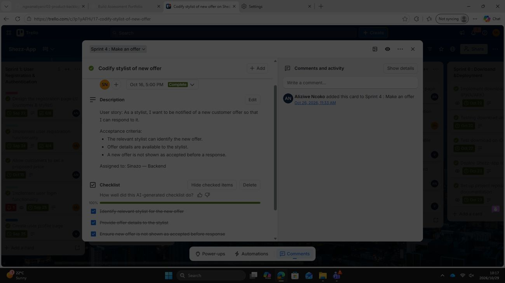

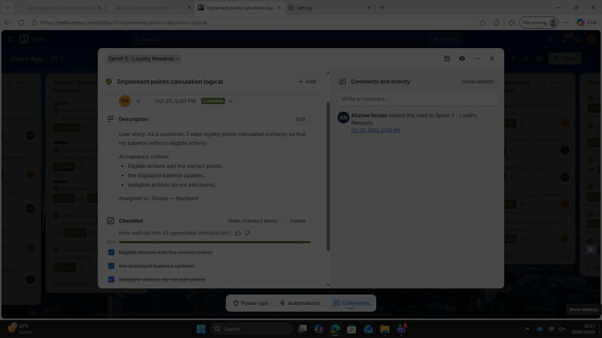

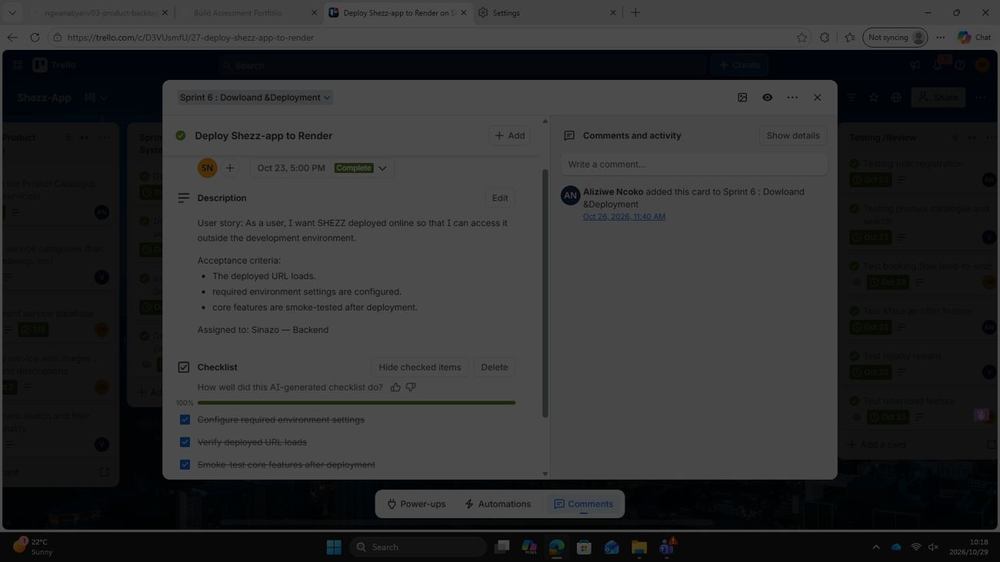

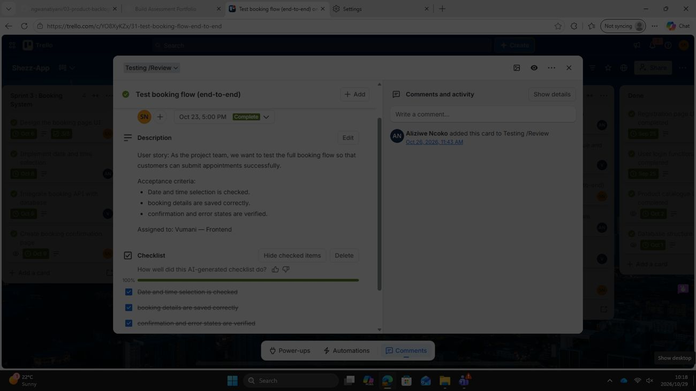
Reflection (STAR)
Shezz-App had a long list of features (registration, catalogue, booking, offers, loyalty, deployment) and three people with different skills. Without clear, testable requirements the work could easily have been duplicated or left unfinished.
We had to write each feature as a user story, define when it counts as done, and break it into tasks assigned to the right team member.
Every Trello card follows the "As a… I want… so that…" format and has three acceptance criteria, an owner, a due date and a checklist. I owned the backend cards (registration, service database, stylist offers, points calculation, Render deployment) and each checklist was ticked to 100% before the card moved on.
All cards shown are complete, and the criteria doubled as test cases for the end-to-end testing column. I learned that good acceptance criteria remove arguments about "done". One thing I would improve is consistency of labels: a few cards carry a role label that differs from the assigned owner (for example the Sprint 2 card is labelled Frontend but assigned to Backend).
3. Product Backlog
The prioritised list of all work needed for the product.
Evidence

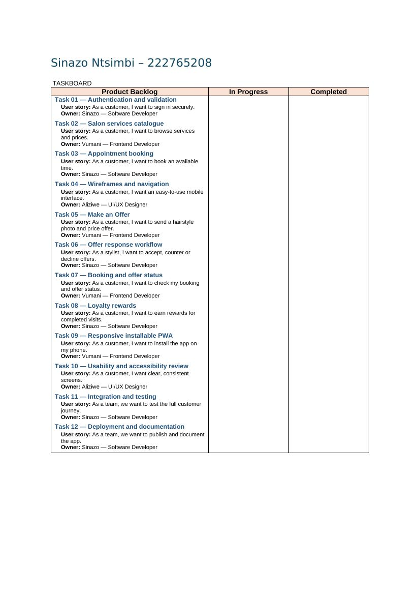

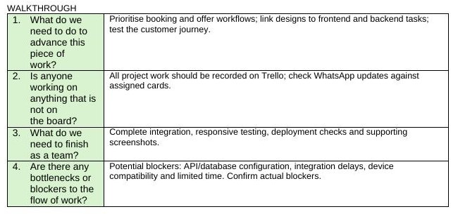
Reflection (STAR)
With a tight deadline we needed one shared list of everything Shezz-App had to do, so the team always knew what mattered most and who owned it.
I had to help build and maintain the product backlog, assign owners by role, and check with the team what was blocking progress.
We compiled twelve tasks, each linked to a user story and an owner (Sinazo: backend tasks, Vumani: frontend, Aliziwe: UI/UX). In the walkthrough we agreed to prioritise the booking and offer workflows, link designs to frontend and backend tasks, record all work on Trello, and finish integration, responsive testing and deployment checks. We named likely blockers: API/database configuration, integration delays, device compatibility and limited time.
The backlog fed directly into the sprints on Trello. I learned to prioritise by the value that the customer sees first (booking and offers). The taskboard document is a snapshot of the starting backlog, so in future I would keep it updated as items move to In Progress and Completed.
4. Sprint Backlog
The work selected for each sprint and the delivered result.
Evidence
| Sprint | Goal | Example card (due date) | Owner |
|---|---|---|---|
| 1 | User Registration & Authentication | Implement user registration (24 Sep) | Sinazo – Backend |
| 2 | Product Catalogue | Implement service database (1 Oct) | Sinazo – Backend |
| 3 | Booking System | Design the booking page UI (6 Oct) | Sinazo – UX/UI |
| 4 | Make an Offer | Codify stylist of new offer (16 Oct) | Sinazo – Backend |
| 5 | Loyalty Rewards | Implement points calculation (20 Oct) | Sinazo – Backend |
| 6 | Download & Deployment | Deploy Shezz-app to Render (23 Oct) | Sinazo – Backend |
| Testing | Testing / Review | Test booking flow end-to-end (23 Oct) | Vumani – Frontend |
Table compiled from the Trello cards in Evidence 2.1–2.7. Delivered product below.

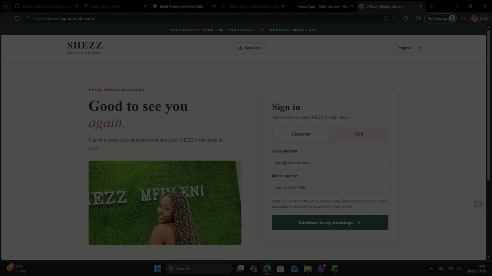

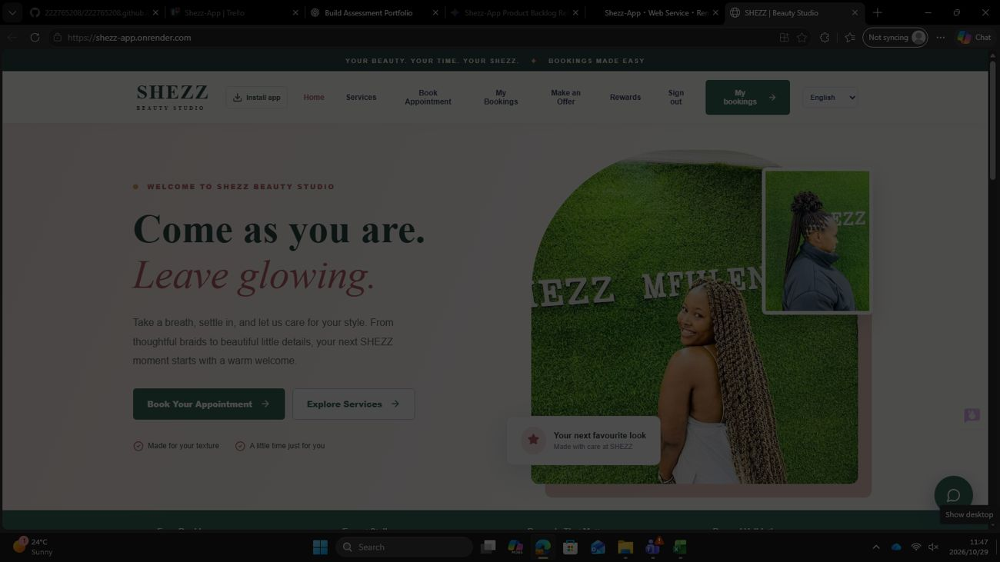

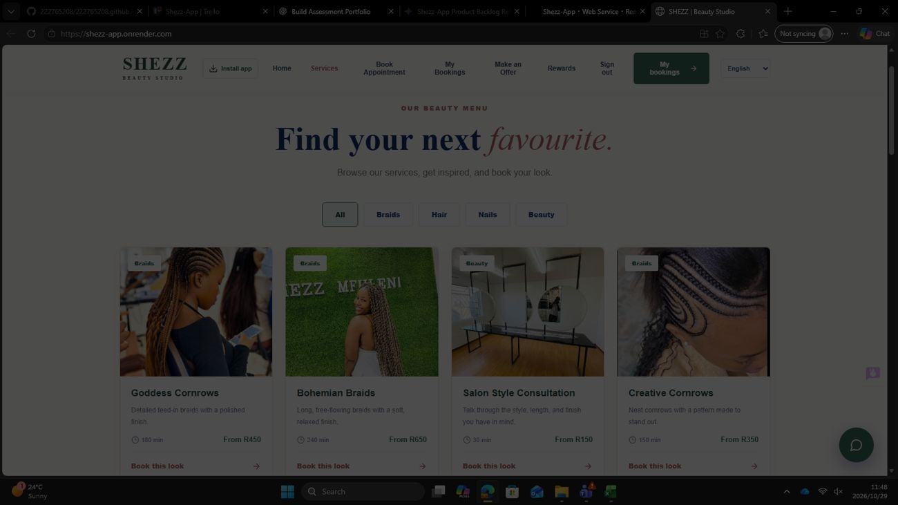
Reflection (STAR)
Shezz-App had to be built in order: users first, then the catalogue, booking, offers, loyalty and finally deployment, with each part depending on the one before it.
I had to plan the sprint work for the backend and integration tasks, deliver each sprint goal by its due date and make sure the finished features were tested and deployed.
We organised six themed sprints plus a Testing/Review column on Trello. I delivered registration, the service database, offer notifications to stylists, points calculation and the deployment to Render, and the team tested registration, catalogue, booking, offers, loyalty and download features.
The cards are complete and the app is live at shezz-app.onrender.com with sign-in, services, booking, offers and rewards. I learned that small, themed sprints make progress easy to see. Next time I would record a short retrospective note for each sprint so improvements are captured as we go.
5. Agile Logbook
Daily stand-up records: what was completed, what is planned, and impediments.
Evidence

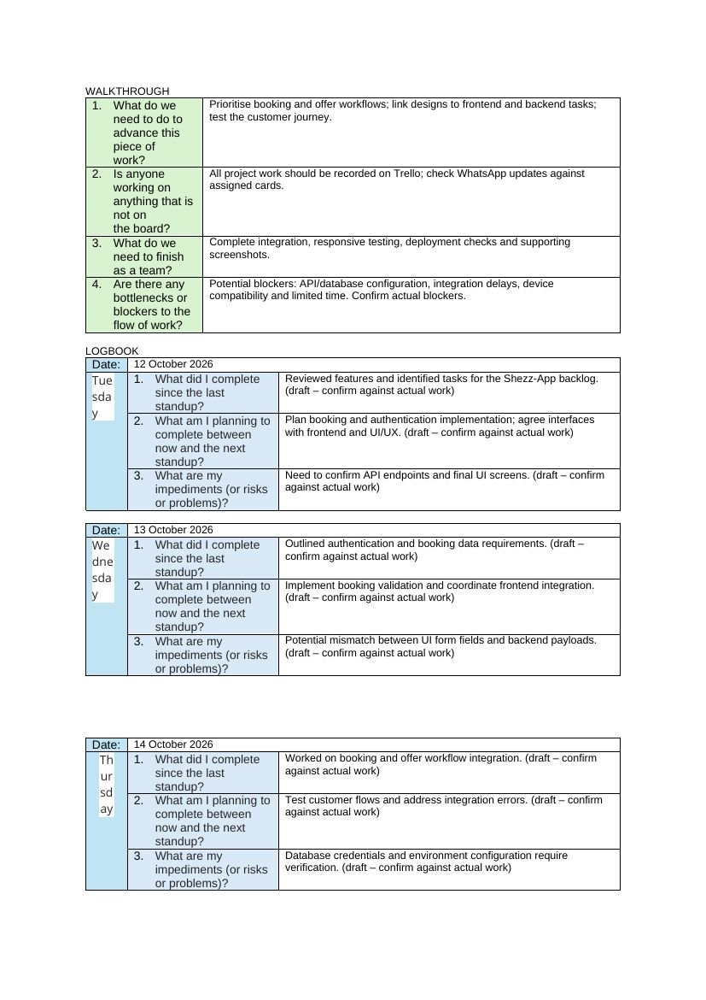

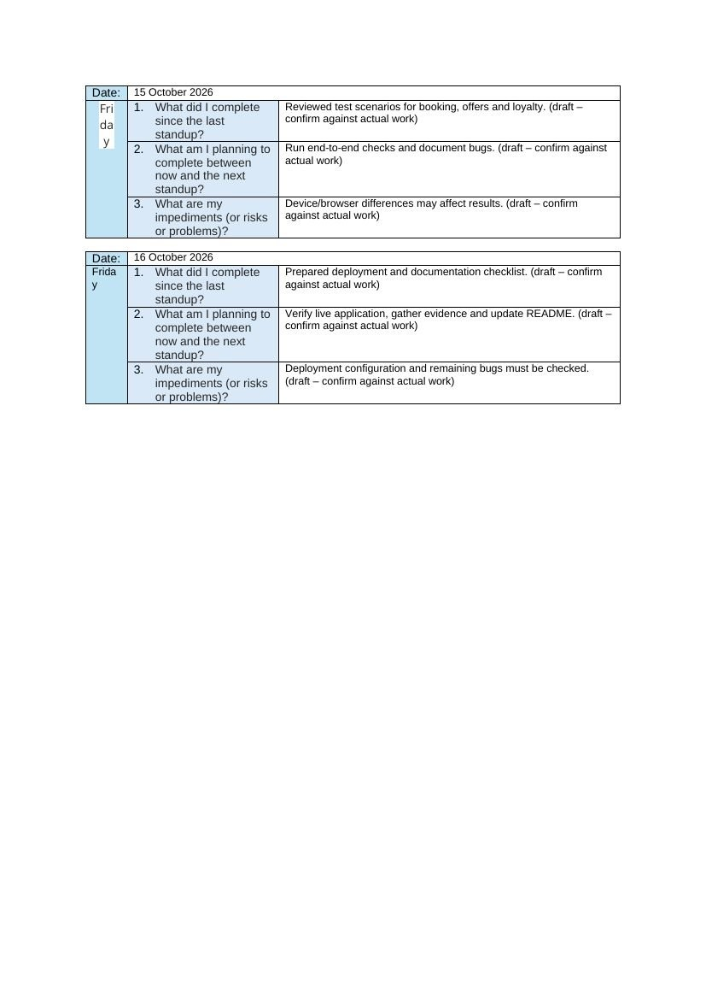

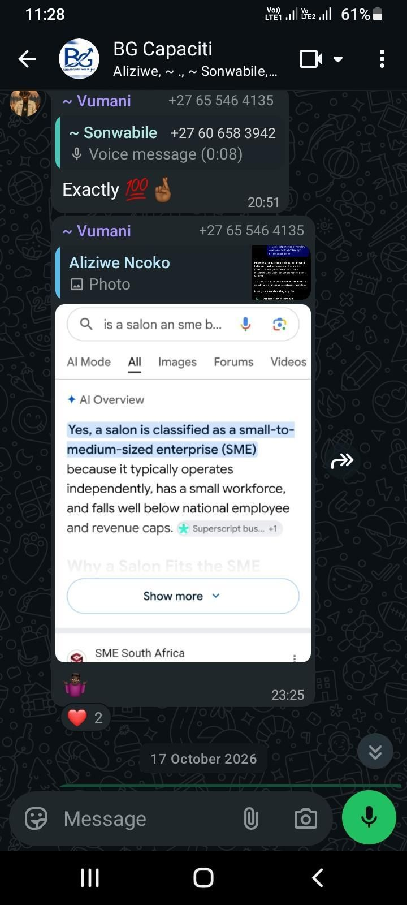
Reflection (STAR)
We worked remotely and around our studies, so we could not rely on being in the same room. Our stand-ups happened on WhatsApp and needed a written record.
I had to log, for each day, what I completed, what I planned next and what was blocking me, so the team could see progress and risks early.
Over 12–16 October I logged: reviewing features and identifying backlog tasks; outlining authentication and booking data requirements; working on booking and offer workflow integration; reviewing test scenarios for booking, offers and loyalty; and preparing the deployment and documentation checklist. I flagged impediments such as unconfirmed API endpoints, UI form fields not matching backend payloads, database credentials and environment settings, device/browser differences, and deployment configuration.
The logged blockers pointed to exactly the work that followed: integration fixes, end-to-end testing and the Render deployment on 23 October. I learned that naming impediments early makes them solvable. I will write logbook entries on the same day as the stand-up so they are always an accurate record.